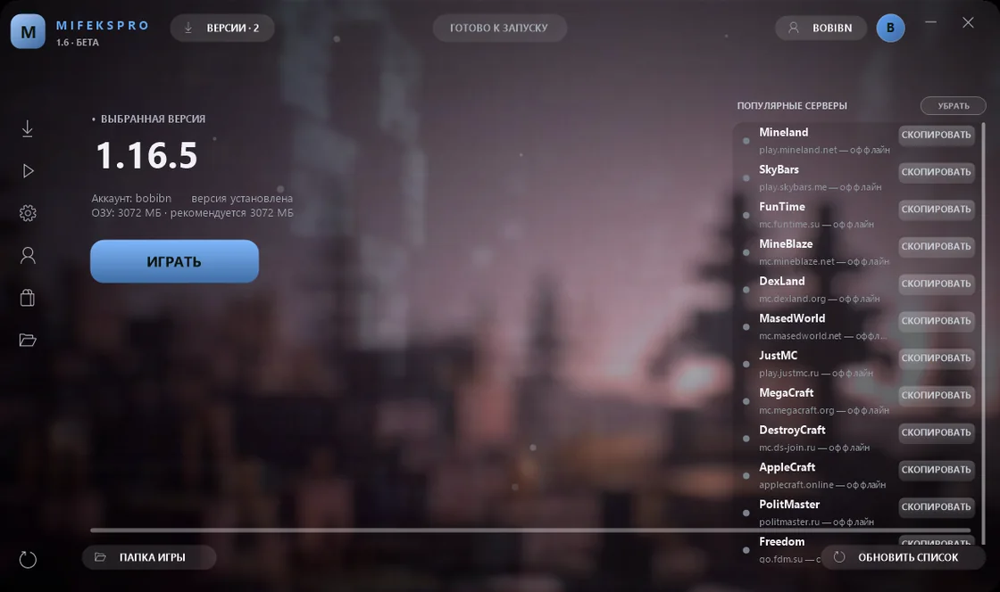
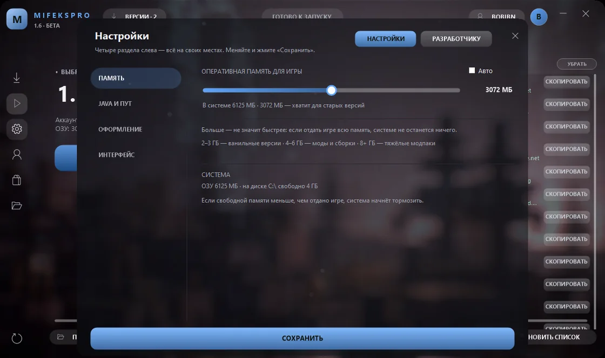

Лаунчер Minecraft
без лишних шагов
Forge, Fabric, NeoForge, OptiFine, все релизы и снапшоты, поиск модов на Modrinth и оффлайн-ник — в одном окне. Установка не нужна: скачали файл и играете.
Что внутри лаунчера
mifeksPROlauncher 1.7 — авторский лаунчер для Windows. Всё, что нужно для запуска игры, уже в одном окне.
Готовые сборки
Сборки уже внутри лаунчера — выбираете нужную и запускаете.
Все версии
Переключайте версии прямо в окне — одна программа вместо десятка.
Настройки
Память, Java, пути и оформление — в одном месте, без правки конфигов.
Встроенный мод
Мод уже входит в лаунчер — отдельно скачивать и устанавливать не нужно.
Modrinth
Моды, ресурспаки и шейдеры ищутся в окне лаунчера под выбранную версию.
Без лишнего
Никаких навязчивых экранов и вторых программ — только запуск игры.
Как выглядит лаунчер
Главный экран, настройки и поиск модов — всё в одном окне, без вкладок браузера.




Мессенджер, который открывается в браузере
Ник и пароль — или вход через Яндекс. Общий чат, личные сообщения, друзья и каналы. Отдельное приложение для Windows и веб-версия по кнопке.
Регистрация идёт прямо на сайте Прикса: ник, телефон и пароль — или Яндекс ID. Отдельный файл priks.exe нужен, только если хочется своё приложение для Windows.
Четыре загрузчика в одном списке
Версия и загрузчик выбираются в два клика. Популярные серверы собраны отдельным списком с готовыми адресами.
Как установить за минуту
Установщика нет: лаунчер — один файл. Пять шагов от скачивания до игры.
Кнопка выше или зеркало в блоке загрузки.
Сверьте SHA256 с указанным на странице или откройте файл на VirusTotal.
Если Windows покажет SmartScreen — «Подробнее» → «Выполнить в любом случае».
Версия и ОЗУ выставляются в лаунчере, библиотеки скачиваются автоматически.
Оффлайн-ник сохраняется в списке — в следующий раз просто выбираете его.
Мессенджер открывается в браузере по кнопке — регистрация занимает минуту.
Версия 1.7
Главное — «Битва построек»: пять режимов, комнаты в пустоте и подключение по короткому коду. Плюс переход на Minecraft 1.21.1 и таймер с темами.
«Битва построек»
Новая вкладка: пять режимов, размер команды от 1 до 4, сложность и комнаты по коду.
Сервер 1.20.1
Fabric-сервер со своей Java 17 и модом запускается одним bat-файлом: мир-пустота, порт 25565.
Чат и аккаунт
Вкладки чата и аккаунта в лаунчере: переписка без браузера, оффлайн-ники под рукой.
Безопасность и требования
Всё, что можно проверить самостоятельно, — ниже. Хеш файла указан рядом с кнопкой скачивания.
Вход только по оффлайн-нику, пароль никуда не передаётся.
Ники, настройки и миры хранятся локально.
Сборка без сторонних сервисов и «партнёрских» установщиков.
Проект инди, поэтому Windows может показывать предупреждение. Подлинность проверяйте по SHA256.
Файлы из сторонних «сборников лаунчеров» могли быть изменены.
Вход через OAuth: пароль вводится на стороне Яндекса, сервис получает только профиль.
| Параметр | Минимум | Комфортно |
|---|---|---|
| Windows | 10 (64-бит) | 10 или 11, 64-бит |
| Оперативная память | 4 ГБ (игра — 2 ГБ) | 8 ГБ+ (игра — 4 ГБ) |
| Место на диске | ~1 ГБ | 5 ГБ+ с модами и мирами |
| Java | Отдельно ставить не нужно — лаунчер сам готовит окружение | |
| Права администратора | Не требуются | |
ОЗУ под игру выставляется в настройках. Для 1.16.5 достаточно 2–3 ГБ, для новых версий с модами — 4 ГБ и больше.
Скачал архив — играешь сразу
Внутри архива уже лежат Java и моды. Ставить ничего не нужно: распаковал папку, запустил exe.
mifeks portable
214 МБ · лаунчер 1.7 + Java 25 + Minecraft 26.3 + мод 1.20.1Все вкладки лаунчера: версии, аккаунт, моды, чат и «Битва построек». Своя Java внутри, системная не нужна.
Скачать ZIPПросто «Битва построек»
56 МБ · старая сборка на 26.3Версия 26.3 без чата и настроек: только режимы и код старого формата. Java 25 внутри архива.
Скачать ZIPСервер битвы
180 МБ · Fabric 1.20.1 + мод + Java 17Пять режимов, лобби в пустоте, баны, кик и телепорт. Запуск одним файлом «ЗАПУСТИТЬ-СЕРВЕР-1.20.1.bat».
Скачать ZIPВсе компьютеры в одной сети? Адрес для друзей — локальный IP и порт 25565, проброс портов не нужен.
Почему mifeksPROlauncher, а не старые лаунчеры
Честно, без рекламы внутри окна и без установщиков.
| mifeksPROlauncher | TLauncher | Legacy | |
|---|---|---|---|
| Вес лаунчера | 2,6 МБ | 50–100 МБ | 60 МБ+ |
| Реклама в окне | нет | есть | есть |
| Установка | не нужна | нужна | нужна |
| Поиск модов Modrinth | есть | нет | нет |
| Мессенджер в комплекте | Прикс | нет | нет |
| Своя «Битва построек» | есть | нет | нет |
Коротко о главном
Что такое mifeksPROlauncher?
Нужна ли лицензия Minecraft?
Это безопасно?
Почему антивирус ругается?
Где хранятся миры и настройки?
Как открыть Прикс в браузере?
Можно ли поставить Прикс приложением?
Есть версия для Linux, macOS или Android?
Какая сейчас версия и что в ней нового?
Скачивание не началось — что делать?
Скачать mifeksPROlauncher 1.7 для Windows
Один файл, без установщика и регистрации. Хеш и ссылка для проверки — сразу под кнопкой.
mifeksPROlauncher 1.7 · бета
mifekspro.exe · 2 718 720 байт · Windows 10/11Forge, Fabric, NeoForge, OptiFine, 103 версии игры, Modrinth, 12 серверов и вкладка «Битва построек».
Скачать · 2,6 МБобновлено 21 ноября 2026
Архив сборок
без поддержкиНужны, если новая версия на вашем ПК ведёт себя хуже.
1.5 · бета · 2 614 784 байта 1.4 · бета · 2 609 152 байтаМессенджер
веб-версия и WindowsОткрывается в браузере или отдельным файлом. Регистрация на сайте: ник, телефон и пароль — или Яндекс.
Регистрация на сайте Открыть веб-версию priks.exe · 63 КБВерсия 1.7 — бета. Возможны ошибки и вылеты: проект выйдет из беты в 2027 году. Перед запуском сделайте резервную копию мира.